WITH AN INCREDIBLE NUMBER OF ACCOMPLISHMENTS TO THE NAME, WILLIAMSTOWN THEATRE FESTIVAL HAS ESTABLISHED ITS 70-YEAR LEGACY AS AN ESSENTIAL INSTITUTION.
WITH AN INCREDIBLE NUMBER OF ACCOMPLISHMENTS TO THE NAME, WILLIAMSTOWN THEATRE FESTIVAL HAS ESTABLISHED ITS 70-YEAR LEGACY AS AN ESSENTIAL INSTITUTION.
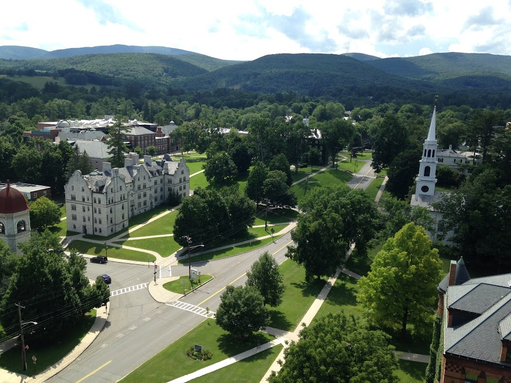
WE’VE MADE SIGNIFICANT CONTRIBUTIONS TO THE LANDSCAPE OF THE AMERICAN THEATER:
Williamstown Theatre Festival has a history of developmental work and full productions continuing life on Broadway, Off-Broadway and regionally. This season alone, Williamstown Theatre Festival is represented on Broadway by both Here Lies Love and Lempicka. Other Broadway, Off-Broadway, and regional representation has included The Elephant Man, The Bridges of Madison County, The Sound Inside, The Visit, Fool for Love, Choir Boy, Paradise Blue, Grand Horizons, The Rose Tattoo, Seared, Selling Kabul, Unknown Soldier, One Mo' Time, Hedda Gabler, The Man Who Had All the Luck, and See What I Wanna See, among others.
Cost of Living, which was developed and premiered at Williamstown Theatre Festival, was awarded the 2018 Pulitzer Prize for Drama and made its debut on Broadway in Fall 2022. English, which was awarded Williamstown Theatre Festival’s 2020 L. Arnold Weissberger New Play Award, was also awarded the 2023 Pulitzer Prize for Drama.
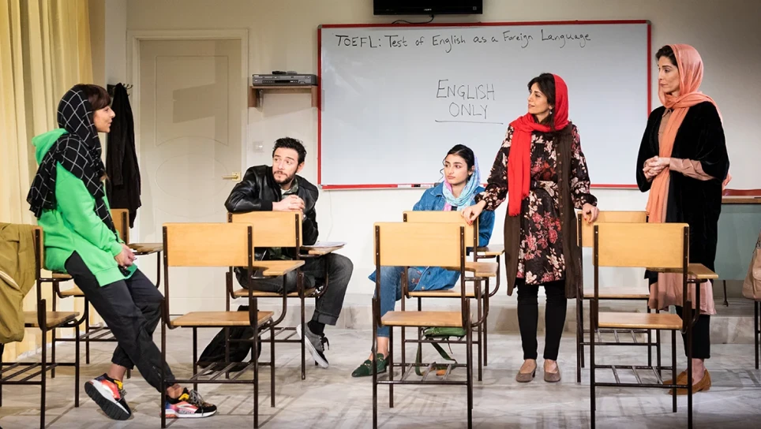
English, 2023 Pulitzer Prize Winner
WE’VE MADE SIGNIFICANT CONTRIBUTIONS TO THE LANDSCAPE OF THE AMERICAN THEATER:
A few of the Williamstown productions that have had a continuing life on Broadway, Off-Broadway and regionally.
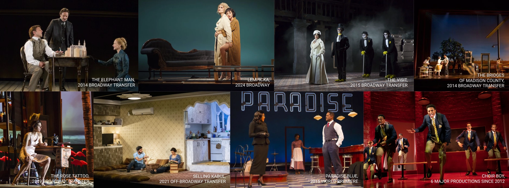
WE’VE TRAINED, DEVELOPED, AND ENRICHED GENERATIONS OF THEATRE ARTISTS…
Thousands of notable artists have graced our stages or have gotten their start at Williamstown.
WE’VE TRAINED, DEVELOPED, AND ENRICHED GENERATIONS OF THEATRE ARTISTS…
Just 100 of the notable artists who have graced our stage
Alec Baldwin
Alison Pill
Allison Janney
Amanda Seyfried
Andrea Martin
Ann Reinking
Arthur Miller
Ashley Park
Audra McDonald
Austin Pendleton
B.D. Wong
Bebe Neuwirth
Becky Ann Baker
Bernadette Peters
Betsy Aidem
Betty Buckley
Bill Irwin
Blair Underwood
Blythe Danner
Bradley Cooper
Brie Larson
Calista Flockhart
Charlie Day
Cherry Jones
Chita Rivera
Chris Messina
Chris Pine
Christopher Fitzgerald
Christopher Reeve
Christopher Walken
Cicely Tyson
David Hyde Pierce
David Schwimmer
Dianne Wiest
Dominique Morisseau
Dylan Baker
Elaine Stritch
Elizabeth Banks
Elizabeth Marvel
Emmy Rossum
F. Murray Abraham
Frank Langella
Gayle Rankin
George C. Wolfe
Grace Gummer
Gwyneth Paltrow
James Naughton
Jefferson Mays
Jeremy Shamos
Jesse Tyler Ferguson
Jessica Chastain
Jessica Hecht
Jim Belushi
Joel Grey
John Benjamin Hickey
Judith Light
Justin Long
Kate Burton
Kate Hudson
Kathryn Hahn
Katie Finneran
Kelli O’Hara
Laura Benanti
Lily Rabe
Linda Lavin
Louisa Jacobson
Mamie Gummer
Mandy Patinkin
Marian Seldes
Marisa Tomei
Mary Tyler Moore
Mary-Louise Parker
Matthew Broderick
Matthew Perry
Meritt Weaver
Michelle Williams
Nathan Lane
Nina Arianda
Olympia Dukakis
Patricia Clarkson
Paul Giamatti
Paul Sparks
Peter Dinklage
Philippa Soo
Rob Lowe
Ruben Santiago-Hudson
Sam Rockwell
Sam Waterson
Sigourney Weaver
Sterling K. Brown
Steven Pasquale
Stockard Channing
Susan Stroman
Thomas Sadoski
Tim Daly
Tony Goldwyn
Ty Burrell
Tyne Daly
Uma Thurman
Viola Davis
…AND WE’VE SHAPED THEIR CAREERS
“I loved the energy in Williamstown and it is where I learned how to build shows from the ground up. That experience has been irreplaceable for me in my career. My time at Williamstown gave me a huge advantage and introduced me to many of the people with whom I collaborate today.”
— David Korins
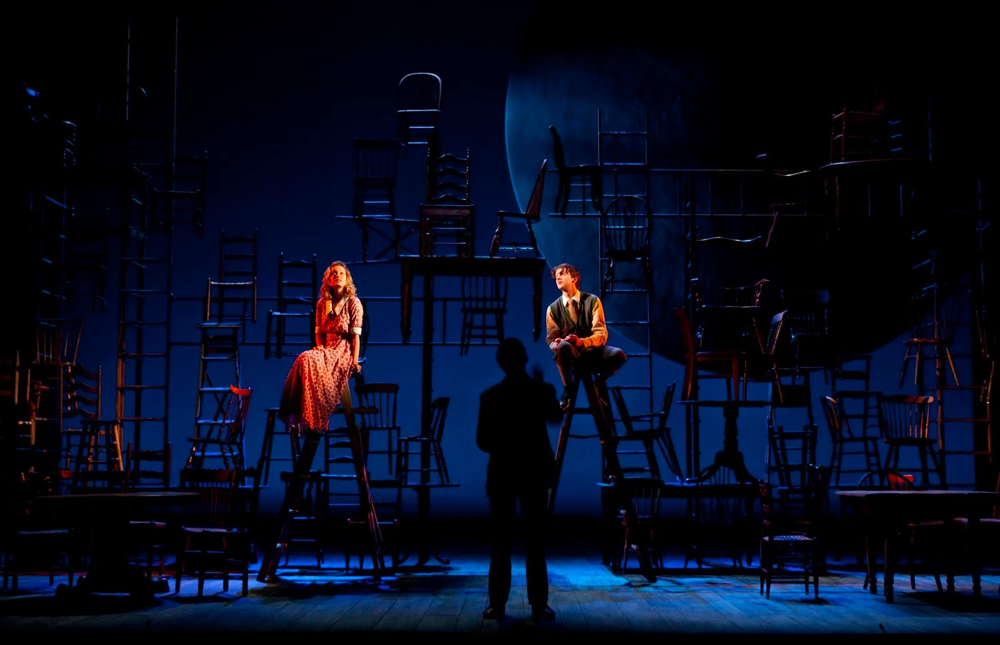
…AND WE’VE SHAPED THEIR CAREERS
“Williamstown moves the art form forward. It’s a safe, beautiful place to work on new material or material that’s being imagined in a new way. It takes risks. What’s wonderful about Williamtown is not only do you have this incredible festival that is so rich with talent, but you are blessed with an incredibly supportive audience that wants to be provoked. They come to this festival to be challenged, to see new things and new perspectives.”
— Audra McDonald
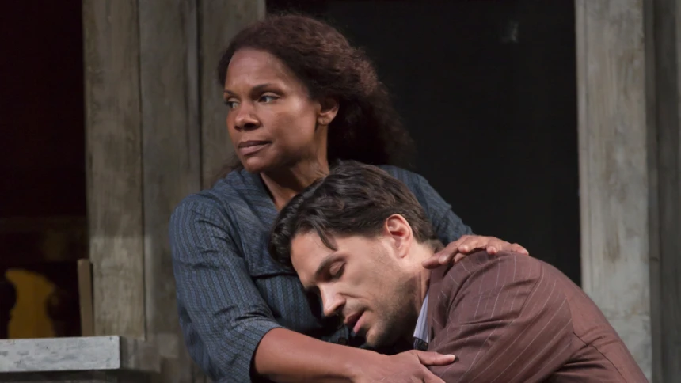
…AND WE’VE SHAPED THEIR CAREERS
“I have tremendous gratitude that WTF was such an indelible part of my childhood, and that it provided the nest to incubate my artistic growth.”
— Gwyneth Paltrow
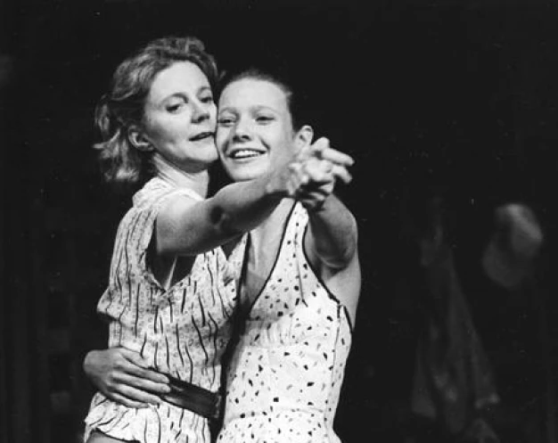
WILLIAMSTOWN THEATRE FESTIVAL EXISTS WITHIN A VIBRANT CULTURAL ECOSYSTEM, CENTERED IN NATURE AWAY FROM AN URBAN CENTER.
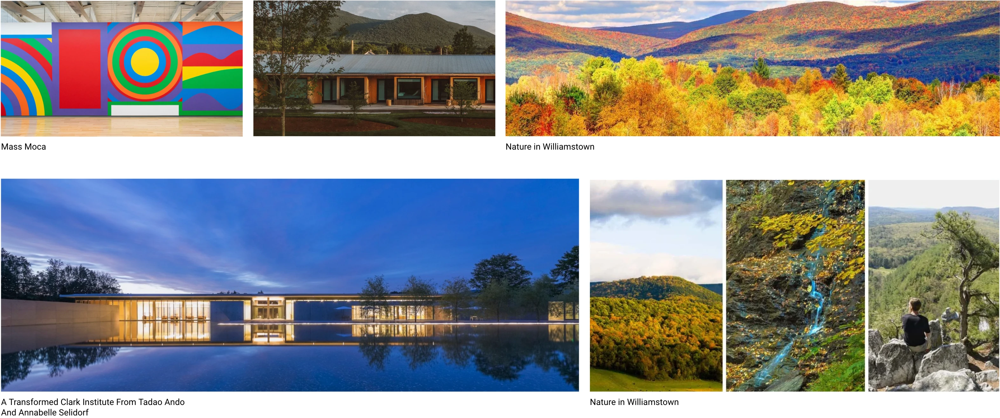
THOSE WHO KNOW AND HAVE EXPERIENCED THE FESTIVAL, DESCRIBE ITS MAGIC IN AN INSPIRING WAY.
“I remember the excitement of a full day of WTF rehearsals, sets being delivered, local community theater, matinees, evening performances, audiences arriving from everywhere, experimental theater in the smaller spaces, excited crowds waiting to have their ticket taken and getting a program, the after hours cabaret, the “famous” actors walking about town.”
— Marge Chamberlain, Audience / Local Community / Volunteer + WTF Guild Member
“Williamstown was the first theater festival to announce that they are bringing changes to their system, and I think naturally I'm an artist who wants to be part of the change. So I joined last year, and it was a lot of experimentation, and it was a lot of newness that I thrived off of. This year there was even more changes, and I felt like my time was not done. So again, I think just the impulse I have as an artist is to follow the change, and I found that at Williamstown..”
— Isabel Rodriguez, Artist
“The Berkshires are just like a magical, beautiful setting. There's no way to not be super close with all the people that you're working with when the people are the thing, people and the landscape are the thing, because there's not a lot of distractions outside of just nature, human beings and the work, and the obsessive work that you put into these projects..”
— Erin Markey, Artist
“What makes the Williamstown Theatre Festival special is the combination of people who are learning craft for the first time, coming together with people who are experienced in their craft and who want to try new challenges. I think that's the thing that makes this place distinctive more so than other theaters where you could just put on plays. I think it's the combination of that energy plus this incredibly beautiful, magical location, which is Williamstown, Massachusetts, and the Berkshire Hills that really come together to create something very, very special. I mean, I've always felt that.”
— Jenny Gersten, Interim Artistic Director
“The Berkshires are magical in summertime: rolling hills, lush meadows, and rushing brooks prompt meditation and reflection. People visit, in part, to get distance on their lives, ponder and consider new pathways. WTF synergistically complements those dynamics for audiences and artists by creating its own beauty, and by boldly provoking larger questions. In this way the WTF and the Berkshires symbiotically reinforce a journey of reinvigoration and beauty.”
— David Stewart, Donor
BUT, WTF IS AT AN INFLECTION POINT: WE ARE AN ORGANIZATION WITH A STORIED PAST AND, LIKE THE MAJORITY OF NONPROFIT THEATERS IN AMERICA, OUR MODEL IS NO LONGER SERVING US.
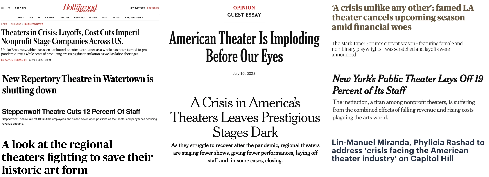
THE WORLD IS IN AN EPIDEMIC OF LONELINESS AND ISOLATION, AFFECTING INDIVIDUAL HEALTH AND THE HEALTH OF OUR SOCIETY.
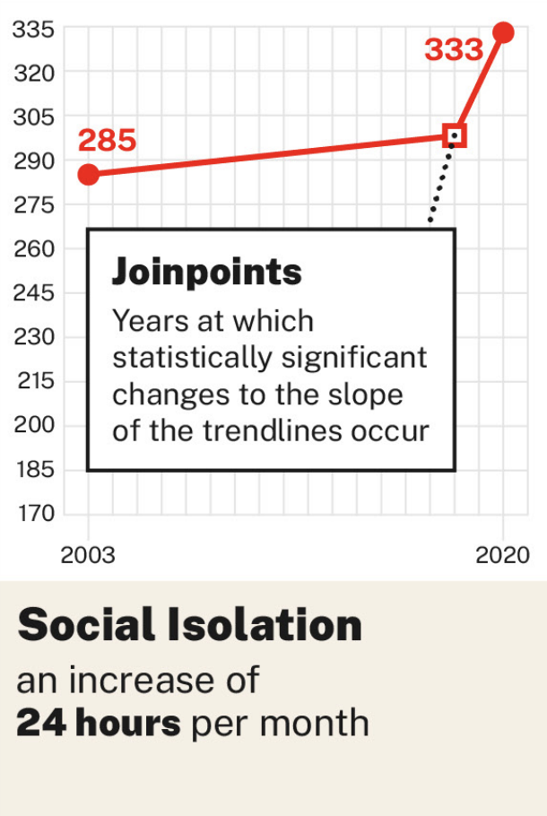
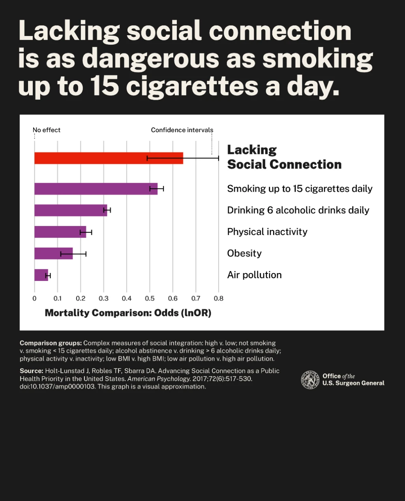
Source: Our Epidemic of Loneliness and Isolation:The U.S. Surgeon General’s Advisory on the Healing Effects of Social Connection and Community, U.S. Dept of Health and Human Services, 2023
A CONNECTION TO NATURE IS KNOWN TO IMPROVE INDIVIDUAL HEALTH, BUT WE’RE ALL INCREASINGLY DISCONNECTED FROM IT.
OUR ECONOMY HAS EVOLVED INTO AN EXPERIENCE ECONOMY.
3 IN 4
More than 3 in 4 millennials (78%) would choose to spend money on a desirable experience or event over buying something desirable, and 55% of millennials say they’re spending more on events and live experiences than ever before.
Source: Millennials: Fueling the Experience Economy, Eventbrite-Haris, 2014
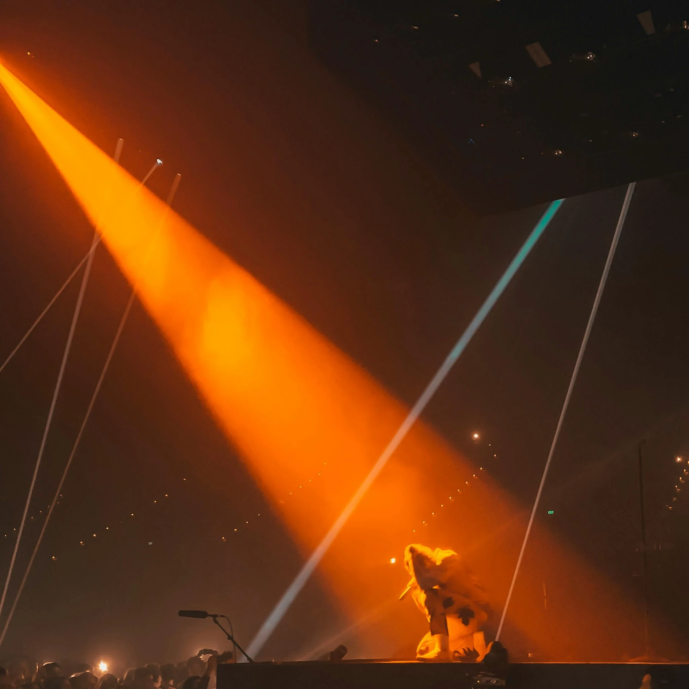
OUR ECONOMY HAS EVOLVED INTO AN EXPERIENCE ECONOMY.
$12 BILLION
Location based entertainment (LBE) also called “out of home entertainment” or “family fun centers” implies any kind of entertainment which is tied to a specific place outside the home. ‘LBE’ environments have been launching all over the world, and the US is no exception. According to new projections from Greenlight Insights, the LBE marketplace is expected to grow to $12 billion by 2023 (making up about 11 percent of the VR industry).
Source: StoryTech Trends, CES, 2019
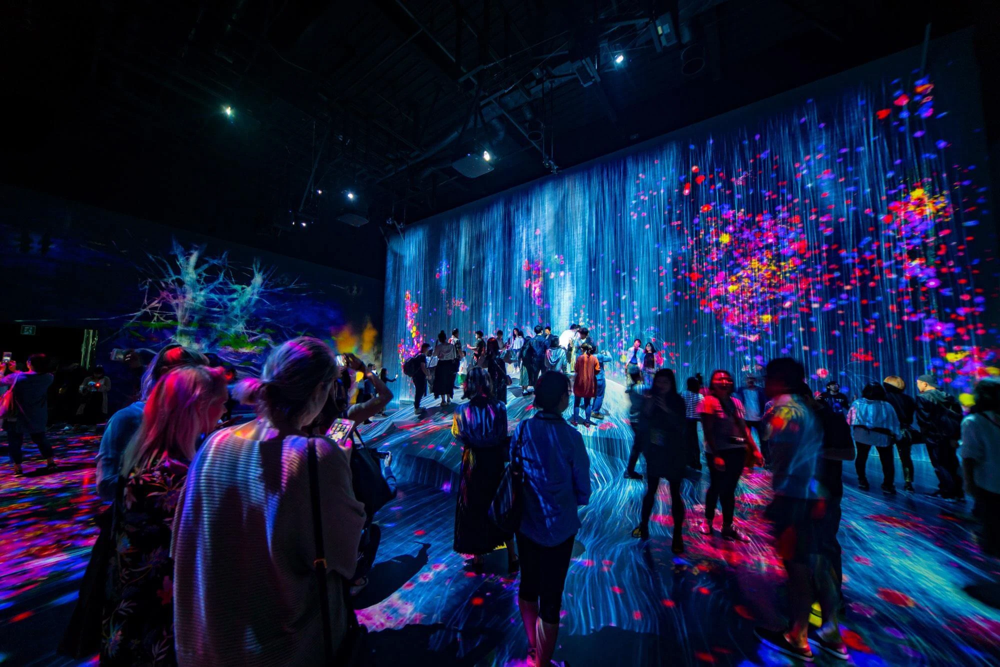
OUR ECONOMY HAS EVOLVED INTO AN EXPERIENCE ECONOMY.
70%
Live Nation found that fans are embracing the value brands can provide to the concert experience, with around 70% of live music goers agreeing that brands can enhance their time at the show.
Source: First Quarter Earnings, Live Nation, 2023
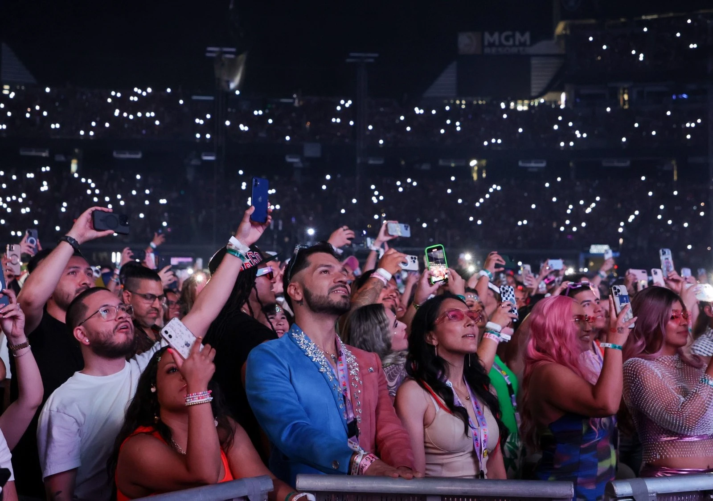
ORGANIZATIONS BUILT ON AN ETHOS OF SOCIAL CONNECTION THROUGH COMMON INTEREST HAVE FOUND SUCCESS.
San Diego Comic-Con is a major annual pop culture convention featuring comics, movies, TV shows, gaming, and fan interactions.
150K
150,000 attendees came to 2023’s event despite two major Hollywood strikes.
160M
ComicCon’s economic regional impact for 2023 was estimated at $160M.
What has happened for 70 summers in Williamstown is hard to describe to those who have not been. It’s a coming together of people and place, talent and town, star power and service to the craft. It is alchemy.
But, the American theatre is in peril. The pandemic decimated our audiences. A global racial reckoning surfaced our industry’s exclusivity and bias. A national labor reckoning challenged our way of working. Funding, as part of a sector-wide drought, is scarce. And the American theatre doesn’t hold the same cultural relevance and impact as it did 70 years ago.
As our screens distance us further from a tangible reality, gathering becomes an increasingly radical act. Theatre is gathering—a shared communal experience that sparks understanding, connection, joy, and discovery. And so, theatre can heal, help us cope, and help us live longer, better lives. Theatre creates the conditions for personal and societal transformation.
In a rapidly changing world, our industry is being called to respond to our challenges with innovation, breaking new ground, and inventing different ways forward. Pushing our time-tested form to tackle current realities of our society: widespread isolation, disconnection from nature, ideological division and social disparity. A better future depends on it.
Williamstown Theatre Festival is a place of connection for people—to one another, to nature, to difference, to diversity, to culture, to theatre.
We craft transportive experiences for audiences. We cultivate new ways of working and learning for artists. We nurture the local community that nurtures us, lifting the region of the Berkshires, its environment and its local economy. We build bridges of access to the American theatre through our platforms. We shape generations of theatre-makers and theatre-goers.
Williamstown Theatre Festival brings us together and transforms us. Because there’s nothing else like it when WTF is happening.
OUR KEY INSIGHT: OUR DIAGNOSIS OF WHAT’S HAPPENING IN THE CATEGORY
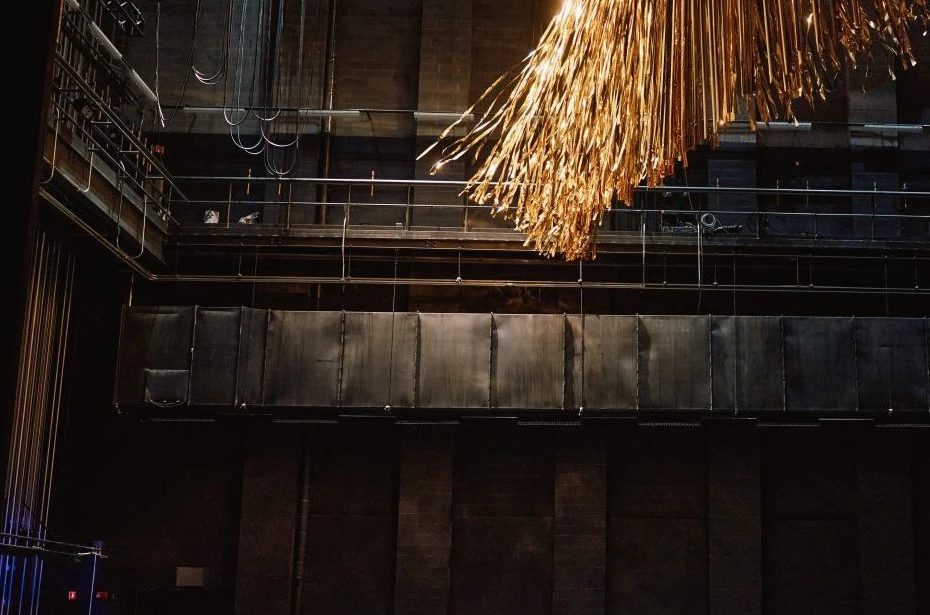
Shifts in American culture have taken audiences away from a live theatre habit, challenging the theatre’s relevance and impact in our country.
OUR CORE BELIEF: WHAT WE SEE AS THE CHALLENGE TO BE SOLVED
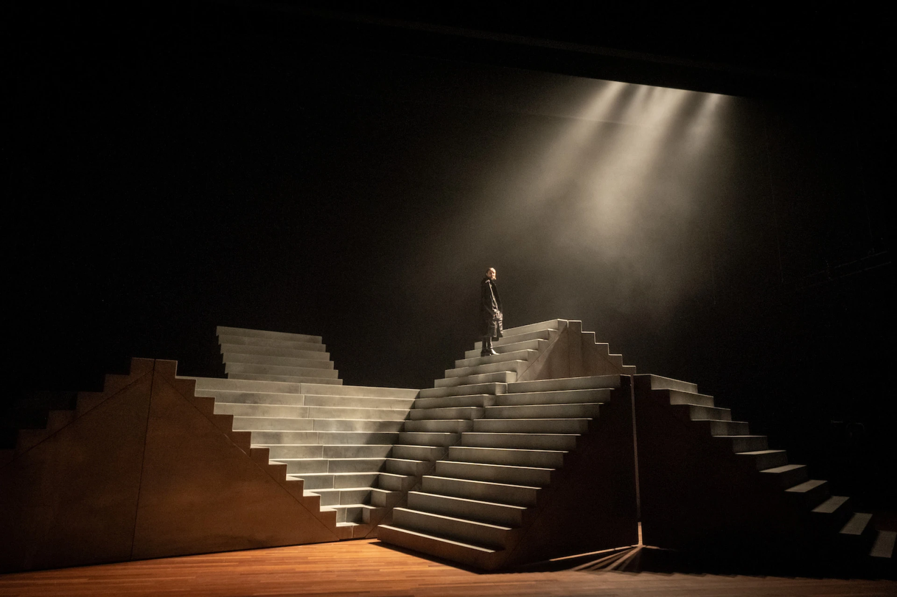
Theatre and storytelling should be a key to a connected humane society as our lives become more isolated.
OUR VISION: WHAT WE’LL BE KNOWN FOR
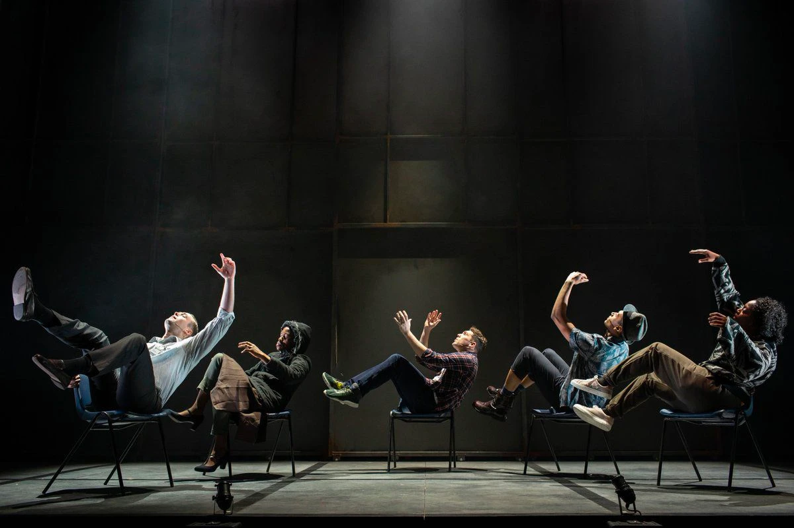
We create deeper connection* through an expansive expression of theatre.
*connection to: other people, nature, belonging, culture, industry, community
WHY WE CAN DO IT: PROOF POINTS THAT ARE UNIQUE AND RELEVANT
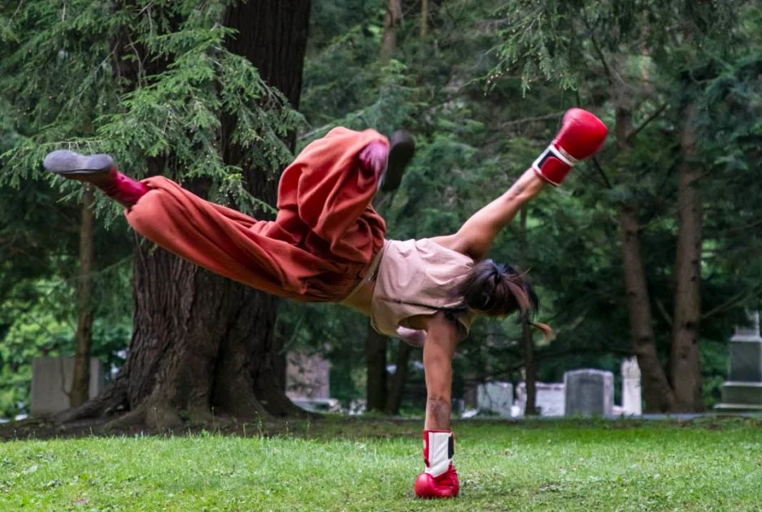
Our legacy as stewards of the modern American theatrical landscape
Our roots in the Berkshires, a countryside cultural hub centered in nature
Our expansive and influential alumni network of industry leaders and stars
WE’LL HONE IN ON A FEW KEY PRIORITIES TO ENABLE OUR FUTURE:
CRAFT A HOLISTIC BRAND, POWERED BY A CONTENT ECOSYSTEM.
Create a brand platform that can build audiences through digital and physical experiences, supported by a robust content ecosystem.
REBUILD OUR CREATIVE DEVELOPMENT INITIATIVES.
Individual artist development via educational and residency programs, and new work and IP development via commissions, workshops, and readings.
FORGE NEW PARTNERSHIPS.
With brands to bring the world of business and marketing closer to the form of theatre, and with institutions to scale our impact.
AS WE CRAFT OUR NEW FORM, WE’RE AIMING TO:
Achieve financial self-sustainability
Appeal to wider, younger, more diverse audiences
Create a culture that values safety, generosity, humility, and experimentation
Lead with a visionary and inspiring POV
Embrace and engage our local community, in all forms
Establish a nimble model of resilience
See beyond our perceived limitations
CRAFT A HOLISTIC BRAND, POWERED BY A CONTENT ECOSYSTEM
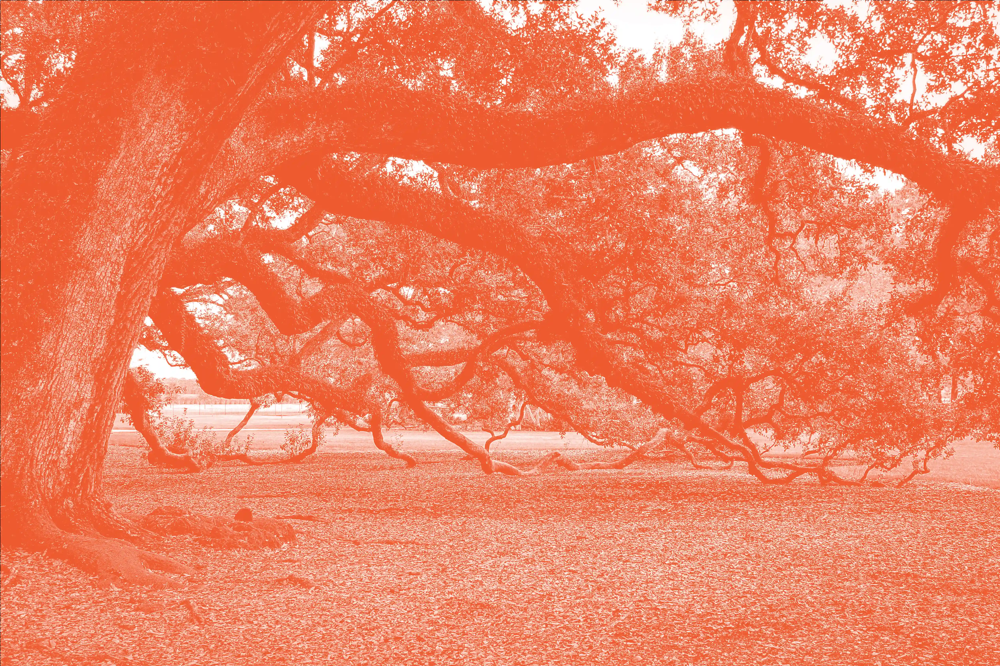
WE’LL FOCUS AND EXPAND OUR DIGITAL AND PHYSICAL CHANNELS OF ENGAGEMENT TO GROW OUR AUDIENCE.
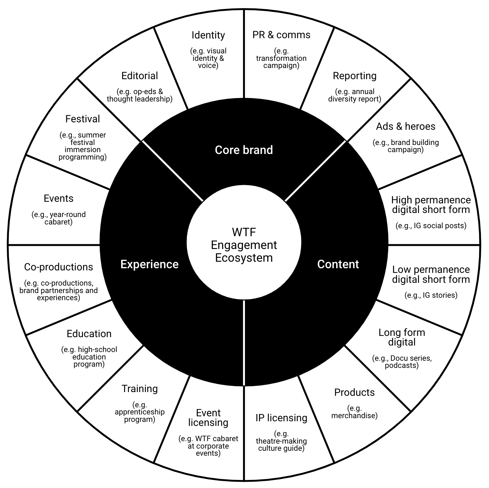
WE’LL CREATE DYNAMIC PROGRAMMING YEAR-ROUND.
SEPTEMBERMAY
POST-/PRE-FESTIVAL CONTENT
We’re starting with a vision for our organization that will require an investment in development. From the programs that have been essential to our organization in the past to successful businesses out in the world in the present, we’re using our learnings to create a new model for the future.
Full-year digital programming
Think: an entire annual programming calendar that debriefs last year’s festival and previews next year’s with digital content like docuseries or podcasts that are either process-oriented (like: MASTER CLASS) or content-oriented (like: SERIALS)
Products and merchandise
Think: process-oriented (like: “putting on a show” kits), and content-oriented (like: LEMPICKA painting kits)
One-offs through partnerships, licensing, and producing
Think: experiences we create with/for brands, productions we co-produce regionally, cabarets we produce outside of the festival
Note: all programming will have opportunities for partnerships and brand activations to generate additional revenue, reach an expanded audience, and create mutual brand benefit.
JUNEAUGUST
SEASONAL FESTIVAL
Multiple layers of programming would allow us to create different tiers of access ranging from all-inclusive premium packages to single ticket purchases.
Traditional programming
Think: live theatre, Cabaret, Readings/Workshops, free theatre
Untraditional programming
Think: stand-up comedy, live music, spoken word poetry
Experiential programming
Think: high tech interactive storytelling experiences using AR/VR/AI, culinary experiences
REBUILD OUR CREATIVE DEVELOPMENT INITIATIVES
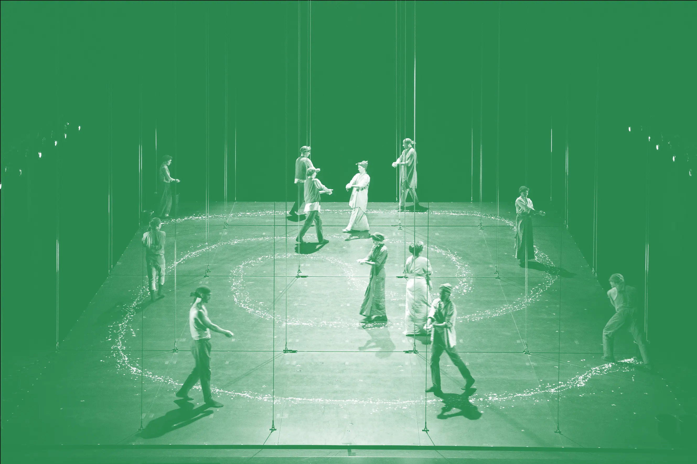
WE ARE PLANTING THE SEEDS FOR RETHINKING HOW THEATRE GETS MADE, CREATING SPACE FOR A DIVERSE* SET OF...
Artists who can have agency over the work they make and how they make it, growing through the process.
*In our organizational design, we’re creating an infrastructure of policies and processes that will embed diversity, equity, and inclusion into our organization, opening up access for artists across disciplines through our programming and programs. We believe that the makeup of our artists should reflect our world, and that it’s an imperative to center fresh voices and fresh thinking.
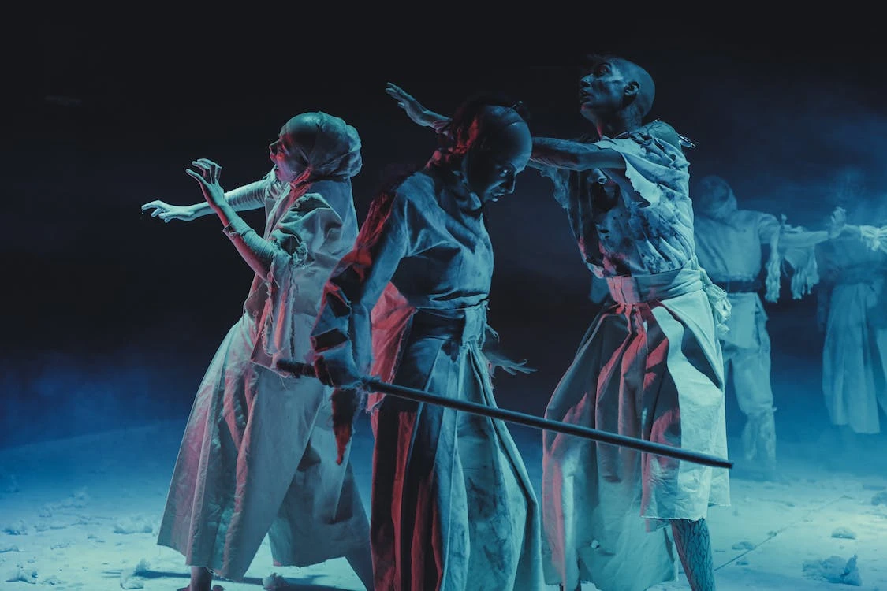
WE ARE PLANTING THE SEEDS FOR RETHINKING HOW THEATRE GETS MADE, CREATING SPACE FOR A DIVERSE* SET OF...
Residencies
Provide housing and resources for companies, directors, playwrights, and producers, to create and develop their next best thing.
Apprenticeships
Partner rising professionals with working professionals at the festival for hands-on learning via a comprehensive apprenticeship program.
Internships
Give students the opportunity to be right in the action of our year-round organization, applying theory to practice via a revitalized internship program.
WE ARE PLANTING THE SEEDS FOR RETHINKING HOW AUDIENCES EXPERIENCE THE FORM, CREATING A FERTILE GROUND FOR BOUNDARY-PUSHING...
Projects that can expand our understanding of theatre.
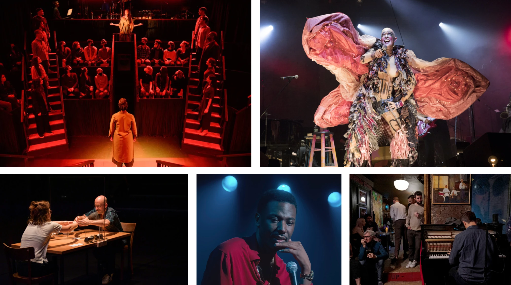
WE ARE PLANTING THE SEEDS FOR RETHINKING HOW AUDIENCES EXPERIENCE THE FORM, CREATING A FERTILE GROUND FOR BOUNDARY-PUSHING...
Artist-first productions
We’ll start with the people we want to work with and the ideas that are exciting them the most, giving artists agency over the work they make and how they make it, and providing the resources and support required for success.
IP commissions
We’ll start with the worlds we want to build, commissioning work that will expand the definition of theatre and tasking makers to think of their work as expansive properties that start on the stage but engage audiences across mediums.
Partnerships
We’ll start with the ambitions of our partners that will help us scale the impact of theatre, investing in work that uses the medium of theatre to progress society and the world.
WE ARE PLANTING THE SEEDS FOR RETHINKING HOW AUDIENCES ENGAGE WITH THE FORM, CREATING COHESIVE AND HOLISTIC...
Experiences that can shift audience expectation and engagement.
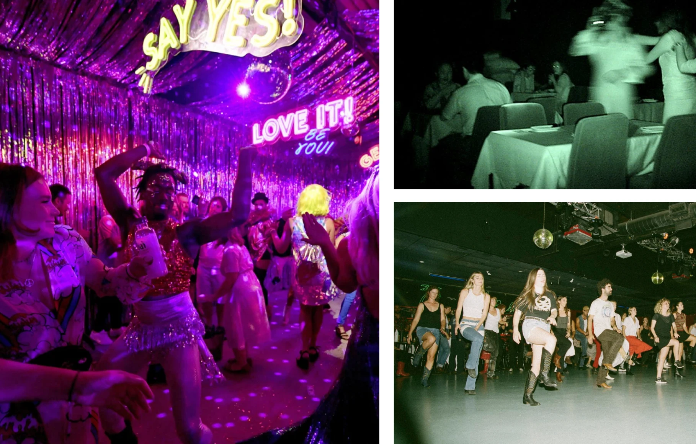
FORGE NEW PARTNERSHIPS
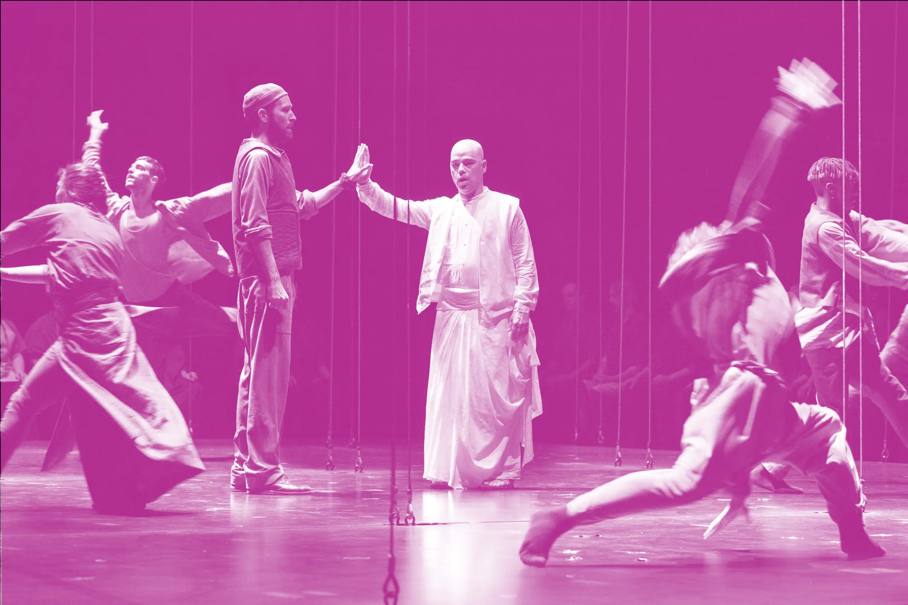
WE’LL PARTNER WITH BRANDS TO BRING THEATRE FORWARD AS A TOOL TO FOSTER CONNECTION.
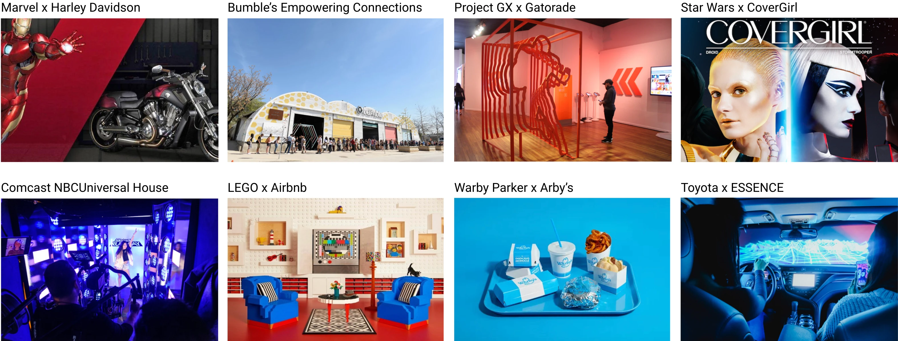
WE’LL PARTNER WITH INSTITUTIONS TO SCALE OUR IMPACT.
Our internal and external systems for the next iteration of our business are fully designed and readied for implementation
We’ve refreshed our brand, marketing, and communications and have begun to signal our transformation with internal and external stakeholders
We have the funding required to jumpstart the implementation of our vision for the next 3-5 years
2025
Build and test a prototype
What success looks like…
Our business function is more aligned with our vision, and we have clear plans for refinement and growth
We’ve produced both year-round and seasonal programming that fully reflects our vision
We’ve begun to build revenue streams of earned income, further identifying priorities for growth
2026
Iterate our prototype
What success looks like…
We’ve refined our business function and have begun to create resilience and stability
We’ve produced another successful wave of year-round and seasonal programming that fully reflects our vision
We’ve focused on the strategic priorities that have allowed us to grow our revenue and our business
2027
Build our work
What success looks like…
Our business function is fully optimized for our ambition
We’re planning and producing year-round and seasonal programming that reflects our vision and is meeting our ambition to build new audiences, connect with existing audiences, and engage with and influence culture
We’ve achieved growth across our key priorities and are moving toward a self-sustainable model
2028
Scale our work
What success looks like…
We have a fully functioning organization, and are growing with our business
Our programming continues to meet our ambitions, growing audiences and increasing engagement
We’ve continued growth across our key priorities and are closer to a self-sustained model
We’ve established key partnerships that scale our impact